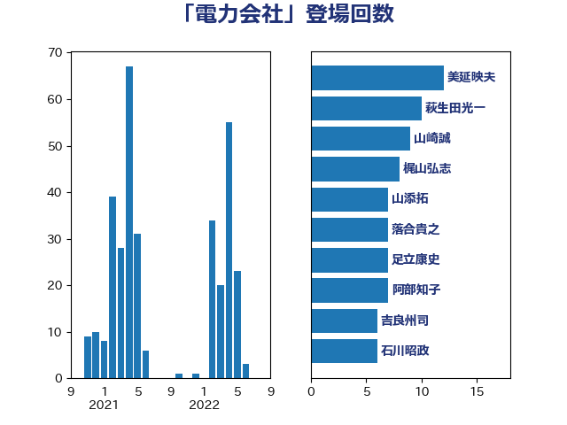

単語「電力会社」

| 美延映夫 | 日本維新の会 | 12 回 |
| 萩生田光一 | 自由民主党 | 10 回 |
| 山崎誠 | 立憲民主党 | 9 回 |
| 梶山弘志 | 自由民主党 | 8 回 |
| 山添拓 | 日本共産党 | 7 回 |
| 落合貴之 | 立憲民主党 | 7 回 |
| 足立康史 | 日本維新の会 | 7 回 |
| 阿部知子 | 立憲民主党 | 7 回 |
| 吉良州司 | 無所属 | 6 回 |
| 石川昭政 | 自由民主党 | 6 回 |
| 音喜多駿 | 日本維新の会 | 6 回 |
| 城井崇 | 立憲民主党 | 5 回 |
| 森本真治 | 立憲民主党 | 5 回 |
| 高橋千鶴子 | 日本共産党 | 5 回 |
| 小宮山泰子 | 立憲民主党 | 4 回 |
| 武井俊輔 | 自由民主党 | 4 回 |
| 福島伸享 | 無所属 | 4 回 |
| 福田昭夫 | 立憲民主党 | 4 回 |
| 秋本真利 | 自由民主党 | 4 回 |
| 笠井亮 | 日本共産党 | 4 回 |
| 阿達雅志 | 自由民主党 | 4 回 |
| 岩渕友 | 日本共産党 | 3 回 |
| 岸田文雄 | 自由民主党 | 3 回 |
| 岸真紀子 | 立憲民主党 | 3 回 |
| 河野義博 | 公明党 | 3 回 |
| 浅田均 | 日本維新の会 | 3 回 |
| 田嶋要 | 立憲民主党 | 3 回 |
| 逢坂誠二 | 立憲民主党 | 3 回 |
| 仁木博文 | 無所属 | 2 回 |
| 大島敦 | 立憲民主党 | 2 回 |
| 小泉進次郎 | 自由民主党 | 2 回 |
| 泉田裕彦 | 自由民主党 | 2 回 |
| 津島淳 | 自由民主党 | 2 回 |
| 浅野哲 | 国民民主党 | 2 回 |
| 磯崎仁彦 | 自由民主党 | 2 回 |
| 福山哲郎 | 立憲民主党 | 2 回 |
| 芳賀道也 | 国民民主党 | 2 回 |
| 荒井優 | 立憲民主党 | 2 回 |
| 菅直人 | 立憲民主党 | 2 回 |
| 菅義偉 | 自由民主党 | 2 回 |
| 鈴木義弘 | 国民民主党 | 2 回 |
| おおつき紅葉 | 立憲民主党 | 1 回 |
| ながえ孝子 | 無所属 | 1 回 |
| 井上英孝 | 日本維新の会 | 1 回 |
| 塩田博昭 | 公明党 | 1 回 |
| 宮内秀樹 | 自由民主党 | 1 回 |
| 寺田静 | 無所属 | 1 回 |
| 小林鷹之 | 自由民主党 | 1 回 |
| 小熊慎司 | 立憲民主党 | 1 回 |
| 山岡達丸 | 立憲民主党 | 1 回 |
| 岩田和親 | 自由民主党 | 1 回 |
| 斎藤アレックス | 国民民主党 | 1 回 |
| 斎藤洋明 | 自由民主党 | 1 回 |
| 林芳正 | 自由民主党 | 1 回 |
| 枝野幸男 | 立憲民主党 | 1 回 |
| 柴田巧 | 日本維新の会 | 1 回 |
| 江島潔 | 自由民主党 | 1 回 |
| 浦野靖人 | 日本維新の会 | 1 回 |
| 漆間譲司 | 日本維新の会 | 1 回 |
| 田中健 | 国民民主党 | 1 回 |
| 田村まみ | 国民民主党 | 1 回 |
| 石井章 | 日本維新の会 | 1 回 |
| 石川香織 | 立憲民主党 | 1 回 |
| 福島みずほ | 社会民主党 | 1 回 |
| 空本誠喜 | 日本維新の会 | 1 回 |
| 簗和生 | 自由民主党 | 1 回 |
| 緑川貴士 | 立憲民主党 | 1 回 |
| 西村康稔 | 自由民主党 | 1 回 |
| 近藤昭一 | 立憲民主党 | 1 回 |
| 金子俊平 | 自由民主党 | 1 回 |
| 青木愛 | 立憲民主党 | 1 回 |
| 高橋英明 | 日本維新の会 | 1 回 |